Generated by scripts/compare_meta_to_benchmark.py.
| run | run_dir | manual_meta | aggregate_rows | |
|---|---|---|---|---|
| 0 | v1-annotation-only | /home/zorro/repos/autonima-results/projects/executive_function/v1-annotation-only | False | all_analyses |
| 1 | v3-annotation-only | /home/zorro/repos/autonima-results/projects/executive_function/v3-annotation-only | False | all_analyses |
No rows.
| manual_name | auto_name | manual_exists | run::v1-annotation-only | run::v3-annotation-only | |
|---|---|---|---|---|---|
| 0 | all | pooled_executive_function | True | True | True |
| 1 | working_memory | working_memory | True | True | True |
| 2 | inhibition | inhibition | True | True | True |
| 3 | flexibility | cognitive_flexibility | True | True | True |
Counts are computed from each run's nimads_annotation.json and PMID-linked through nimads_studyset.json. Includes mapped annotations and all* annotations.
| run | manual_name | auto_name | n_analyses | n_unique_pmids | is_mapped | |
|---|---|---|---|---|---|---|
| 0 | v1-annotation-only | all | pooled_executive_function | 158 | 57 | True |
| 1 | v3-annotation-only | all | pooled_executive_function | 231 | 63 | True |
| 2 | v1-annotation-only | working_memory | working_memory | 67 | 23 | True |
| 3 | v3-annotation-only | working_memory | working_memory | 94 | 26 | True |
| 4 | v1-annotation-only | inhibition | inhibition | 59 | 26 | True |
| 5 | v3-annotation-only | inhibition | inhibition | 86 | 29 | True |
| 6 | v1-annotation-only | flexibility | cognitive_flexibility | 11 | 6 | True |
| 7 | v3-annotation-only | flexibility | cognitive_flexibility | 15 | 5 | True |
| 8 | v1-annotation-only | all_analyses | 331 | 71 | False | |
| 9 | v3-annotation-only | all_analyses | 319 | 69 | False |
| run | v1-annotation-only | v3-annotation-only |
|---|---|---|
| auto_name | ||
| pooled_executive_function | 158 | 231 |
| working_memory | 67 | 94 |
| inhibition | 59 | 86 |
| cognitive_flexibility | 11 | 15 |
| all_analyses | 331 | 319 |
| run | v1-annotation-only | v3-annotation-only |
|---|---|---|
| auto_name | ||
| pooled_executive_function | 57 | 63 |
| working_memory | 23 | 26 |
| inhibition | 26 | 29 |
| cognitive_flexibility | 6 | 5 |
| all_analyses | 71 | 69 |
| project | annotation | n_analyses | n_unique_pmids | is_dataset_total | annotation_path | studyset_path | |
|---|---|---|---|---|---|---|---|
| 0 | executive_function | all | 259 | 177 | False | /home/zorro/repos/neurometabench/data/nimads/executive_function/merged/nimads_annotation.json | /home/zorro/repos/neurometabench/data/nimads/executive_function/merged/nimads_studyset.json |
| 1 | executive_function | flexibility | 23 | 21 | False | /home/zorro/repos/neurometabench/data/nimads/executive_function/merged/nimads_annotation.json | /home/zorro/repos/neurometabench/data/nimads/executive_function/merged/nimads_studyset.json |
| 2 | executive_function | inhibition | 96 | 75 | False | /home/zorro/repos/neurometabench/data/nimads/executive_function/merged/nimads_annotation.json | /home/zorro/repos/neurometabench/data/nimads/executive_function/merged/nimads_studyset.json |
| 3 | executive_function | working_memory | 124 | 70 | False | /home/zorro/repos/neurometabench/data/nimads/executive_function/merged/nimads_annotation.json | /home/zorro/repos/neurometabench/data/nimads/executive_function/merged/nimads_studyset.json |
| 4 | executive_function | __dataset_total__ | 271 | 178 | True | /home/zorro/repos/neurometabench/data/nimads/executive_function/merged/nimads_annotation.json | /home/zorro/repos/neurometabench/data/nimads/executive_function/merged/nimads_studyset.json |
| n_rows | n_cols | dice_mean_full | dice_mean_diagonal | pearson_mean_full | pearson_mean_diagonal | |
|---|---|---|---|---|---|---|
| run | ||||||
| v1-annotation-only | 5 | 4 | 0.413 | 0.566 | 0.622 | 0.782 |
| v3-annotation-only | 5 | 4 | 0.413 | 0.556 | 0.619 | 0.770 |
| run | v1-annotation-only | v3-annotation-only |
|---|---|---|
| auto_name | ||
| pooled_executive_function | 0.706 | 0.720 |
| working_memory | 0.647 | 0.629 |
| inhibition | 0.553 | 0.588 |
| cognitive_flexibility | 0.356 | 0.286 |
| run | v1-annotation-only | v3-annotation-only |
|---|---|---|
| auto_name | ||
| pooled_executive_function | 0.879 | 0.882 |
| working_memory | 0.837 | 0.813 |
| inhibition | 0.770 | 0.796 |
| cognitive_flexibility | 0.643 | 0.587 |
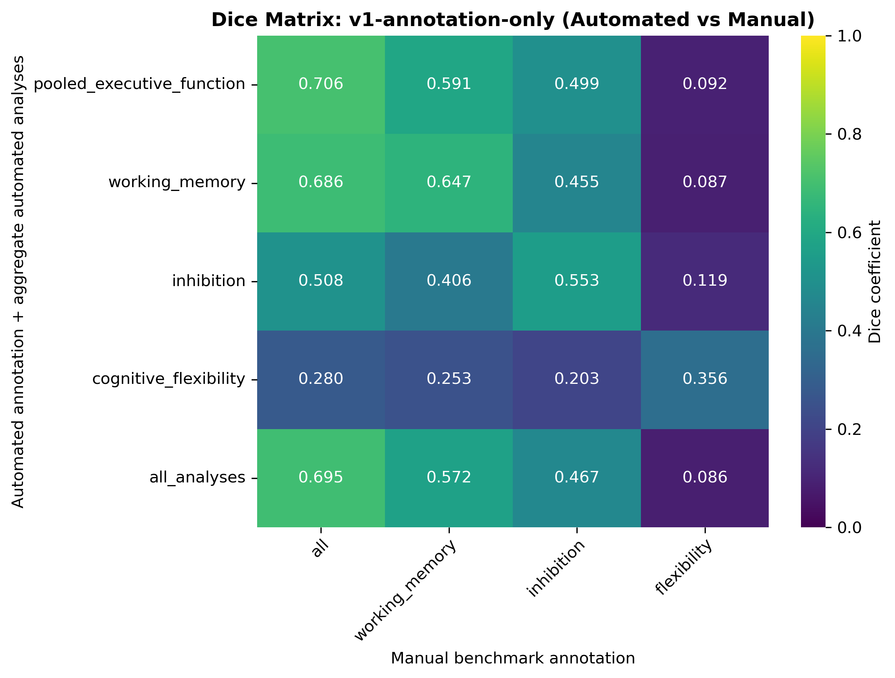
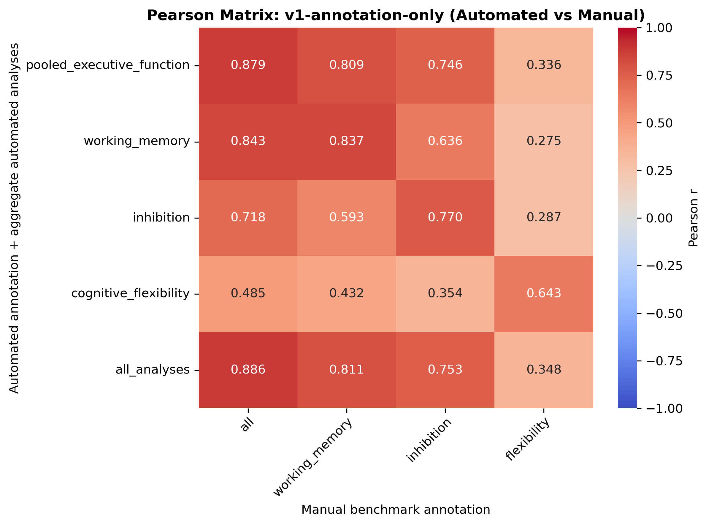
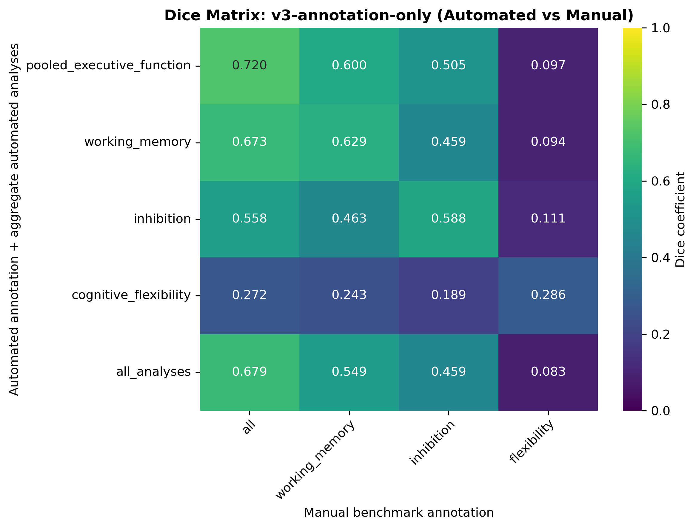
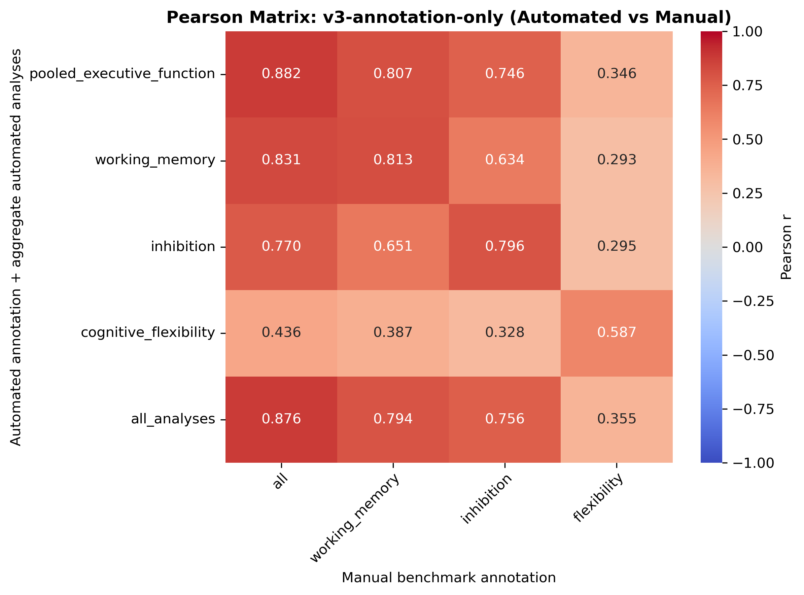
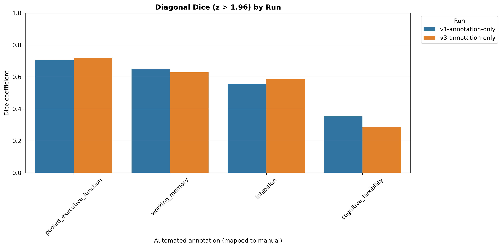
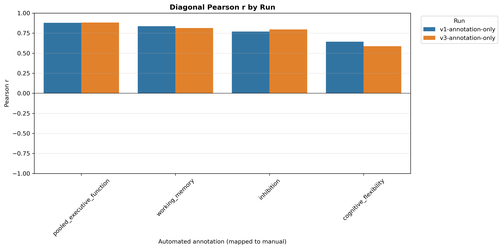
Ordered as manual benchmark first, then each automated run. Includes only all_analyses and mapped custom annotations.
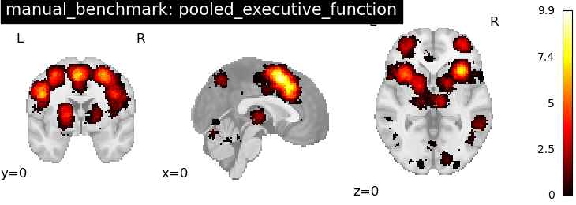
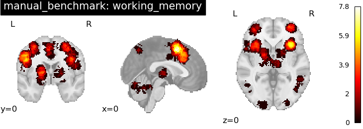
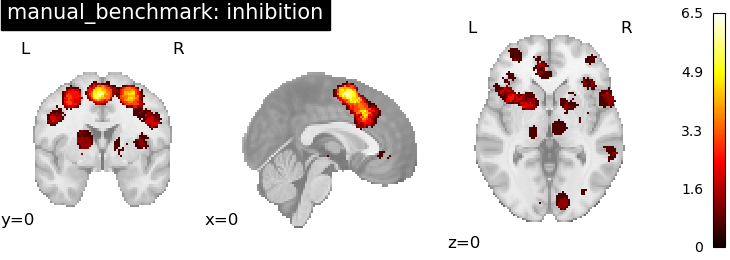
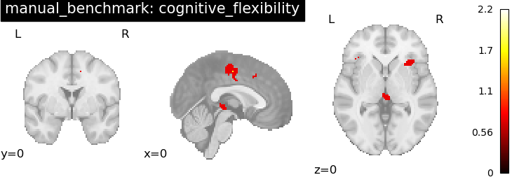
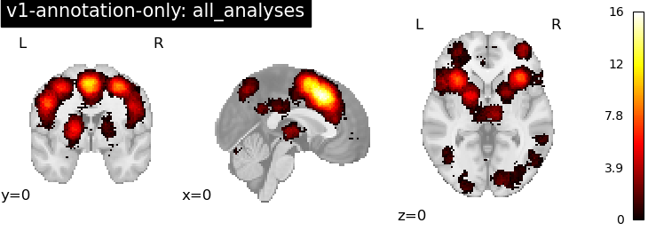
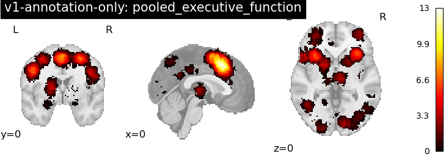
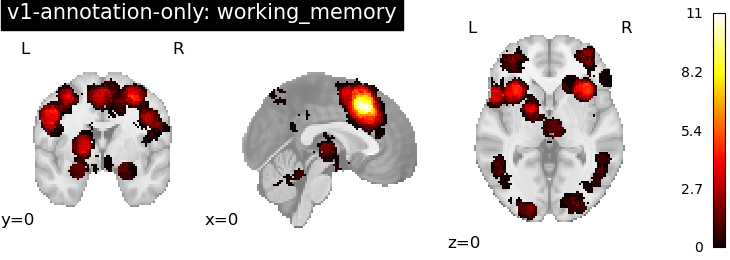
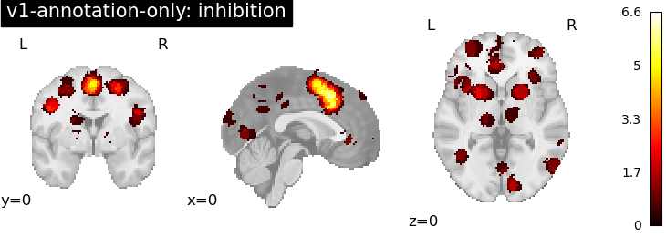
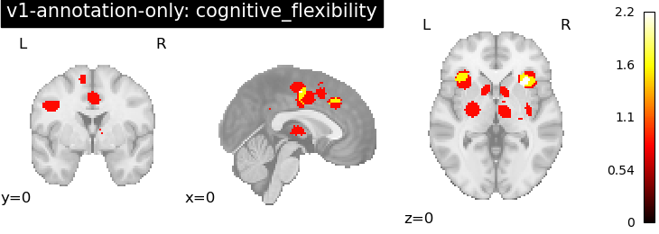
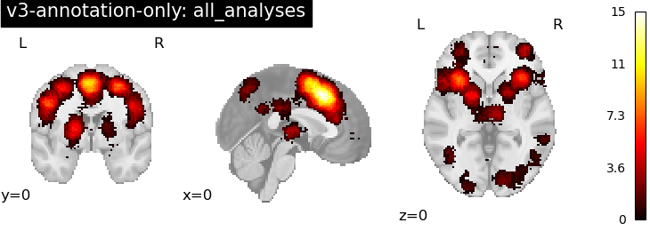
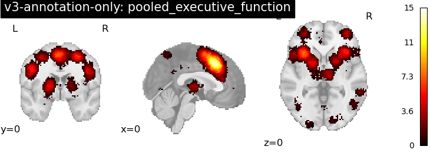
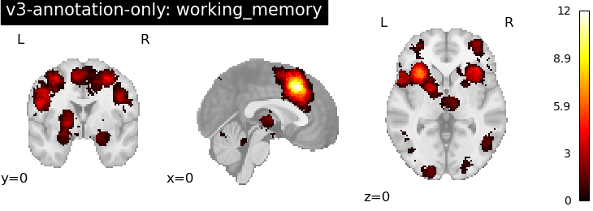
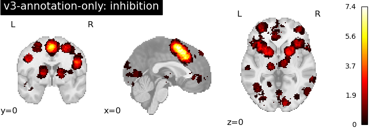
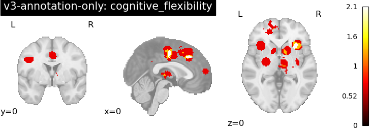